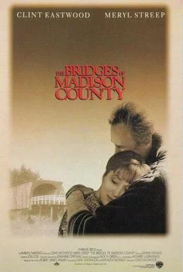
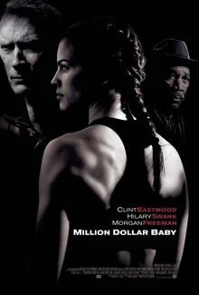
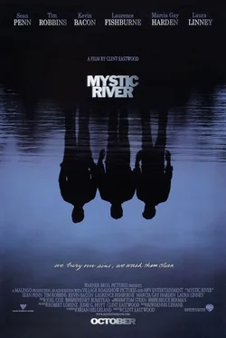

_(cropped).jpg){kind=link}
 Explore film ↗
Explore film ↗A Perfect World
Clint Eastwood
DIRECTOR PROFILE
Clinton Eastwood Jr. (born May 31, 1930) is an American retired actor and filmmaker.
LIFE & CAREER
Clinton Eastwood Jr. (born May 31, 1930) is an American retired actor and filmmaker. After achieving success in the Western TV series Rawhide, Eastwood rose to international fame with his role as the "Man with No Name" in Sergio Leone's Dollars Trilogy of spaghetti Westerns during the mid-1960s and as antihero cop Harry Callahan in the five Dirty Harry films throughout the 1970s and 1980s. These roles, among others, have made Eastwood an enduring cultural icon of masculinity.
Adapted excerpt from Wikipedia, CC BY-SA 4.0. Pronunciation notes omitted.
Read the full biographyImage: Lance Cpl. Melissa I. Ugalde. Source & rights: Public domain ↗.
Profile reference: Director background ↗
Open this director checklist ↗
A selection of this director’s films available in the archive.
Explore film ↗Clint Eastwood

Explore film ↗Clint Eastwood

Explore film ↗Clint Eastwood

Explore film ↗Clint Eastwood